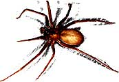

Beware the ubiquitous brown recluse spider: This seemingly harmless creature is definitely . . .
As an amateur naturalist, I've always accepted the old maxim that advises, "If you don't bother it, it won't bother you." So I went happily about my business, feeling mildly sorry for all the small-bodied, long-legged spiders that were devoured by my vacuum cleaner each week, but otherwise leaving them unmolested.
However, one morning last summer my faith was betrayed. I swear to you that I didn't intentionally antagonize the little monster that had taken shelter in my old gardening jeans. All I did was bend over to pull some weeds, and the ill-tempered little beggar sunk his fangs into my leg. It didn't seem like much at the time . . . just a sting that hurt for a minute or two. At any rate, I forgot all about it (after making certain that the perpetrator was no longer among the living, of course) and went on about my chores.
That evening, though, while I was doing the supper dishes, my eyes and ears began to itch. And by the time I'd finished cleaning up the kitchen, the skin on my face and upper body had become red and irritated. At first, I thought that perhaps I was just having an allergic reaction of some sort . . . something that had happened several times before after a day in the garden. However, during the night I awoke with chills, nausea, and a severe pain in my thigh. I remembered about the bite, and after getting up and turning on the light to inspect my leg, I was horrified to discover that the flesh around the bite had turned a scary-looking deep purple and was beginning to crust over with some sort of hard shell.
Had I known then what I know now (how many times have you heard that old story?), I would have gone straight to the hospital emergency ward. As it was, I decided to tough it out until I could get in to see my own doctor late the following afternoon. Once I arrived there, he told me that I'd been bitten by a brown recluse spider. He "excised" the area of the bite (that's doctor talk for cutting the damaged tissue away), gave me an injection of cortisone, and then sent me home with a prescription for a painkiller.
For the next week, I felt as if demons were pricking my thigh with red-hot pitch-forks. Large blisters popped up all around the wound, forming dark brown, leathery scabs when they finally broke.
Then (worse yet) those scabs began to ooze a putrid, greenish yellow pus.
When I returned to my doctor, he told me that I could have saved myself a lot of suffering and pain by getting my initial "dose" of medical attention a few hours sooner . . . if I had, in fact, gone right to the emergency ward after noticing the seriousness of the bite. The brown recluse spider's venom, he explained, is a neurotoxin, and as it spreads through the flesh, it kills cells (the result being the pus described a moment ago). The longer the poison has to work before being halted by medical treatment, the greater the severity of the problem.
Because of my tardiness in seeking help, it took four months-four months-for the wound to heal to the point where all that remained was a large (and very unsightly) red scar. And even at that, I was lucky, since it could have been much worse. Some brown recluse victims must be hospitalized because of severe initial reactions. Others have had to undergo skin grafting and even plastic surgery, and one of my own doctor's patients was left with hemolytic anemia (a dangerously excessive destruction of red blood cells). Why, people have even died from this spider's venomous bite . . . usually children, and usually because of severe liver and kidney damage.
RECLUSE LORE
While recuperating, I studied up on my assailant. The spider's Latin name is Loxosceles reclusa, but it's more widely known as the fiddleback or violin spider. As these nicknames suggest, the arachnid has a distinctive mark that makes it easy to recognize once you know what to look for . . . a dark brown "fiddle"-or violin shape-with the base at the creature's nose, and the imaginary instrument's neck extending to the back of the anterior (front) part of its bifurcated body. The spider's overall color ranges from dull tan to reddish brown. Its two body sections combined rarely measure over a half-inch in length, and a quarter-inch is more common. The anterior section is smaller and lighter in color than the posterior, with the fiddle being distinct and quite lovely in its perfection. The recluse carries its body suspended between eight long, thin legs that could span a half-dollar, making the pest appear to be much larger than it actually is.
This spider is a debris-lover: It likes to hide (thus the name "recluse") and com monly holes up in corners, behind books and furniture, in shoes, and in clothing and other linen items left lying on the floor. When outdoors, the fiddleback makes its home under rocks, loose bark, and in similar dark, snug places.
Just a few years ago, the brown recluse was found only in the south-central states, especially Missouri, Texas, Oklahoma, and Kansas. But because it's an adept hitchhiker, it has migrated to just about every part of the country. Fortunately-and undoubtedly because the spider would rather hide or run than fight-the number of recluse bites is fairly small in comparison to the abundance of the species. But, un fortunately, the number of bites has increased over the past years.
ORCHESTRATING THE FIDDLEBACK'S DEMISE
To be sure you and your family are safe from this potentially dangerous arachnid, you may wish to undertake periodic "search and destroy" missions right in your home. And your primary battle plan should center around good housekeeping. If clothes aren't allowed to pile up on the floor, and if you vacuum regularly (especially under and behind things), it's likely that Loxosceles reclusa will search out a less tidy place to call home.
If you think your house might already be infested with fiddlebacks, give it a good cleaning and then do what the experts recommend: Hunt the little blighters down one at a time and stomp, swat, and smash them into oblivion! (The use of pesticides alone will not do the job on these tough critters.)
DON'T FIDDLE AROUND WITH THE BROWN RECLUSE
The violin spider's bite is almost guaranteed to prove painful, long-lasting, and expensive. It might even manage to kill you. So it's wise to have no compassion when it comes to ridding your home of the brown recluse.
In fact, when that villain takes up residence in your home, keep in mind the not-so -old maxim that says, "Bother it, before it bothers you."
EDITOR'S NOTE: One of the finest little books on poisonous arthropods that we've seen is the Venomous Arthropod Handbook. Its 50 pages cover the identification, biology, and control of a multitude of creepers and fliers, plus detailed information on envenomization symptoms and treatment for bite victims. The booklet is available for $4.50 postpaid from The Superintendent of Documents, U.S. Government Printing Office, Washington, DC 20402 (or call 202/783-3238). For mail orders, payment must accompany order. Request the book by title, plus Stock I.D. Number 008-070-00397-0.
|
 |
|
|